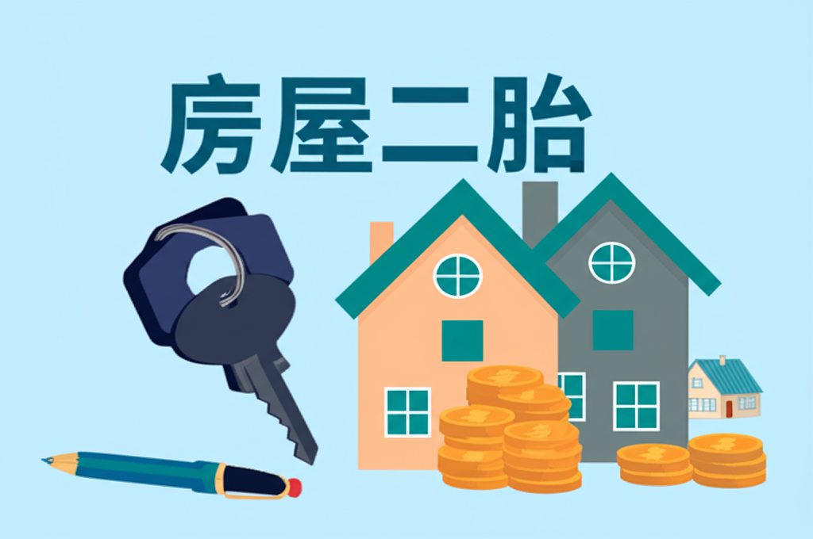

房屋二胎
引言
房屋二胎，顧名思義，就是將已經抵押給銀行或其他金融機構的房屋，再次抵押以獲得貸款。在資金需求緊迫時，房屋二胎提供了一個快速獲取資金的途徑。然而，由於其風險較高，申請人應充分了解其運作方式、優缺點以及相關注意事項，才能做出明智的決定。本篇文章將深入探討房屋二胎的各個方面，幫助讀者全面了解這種融資方式。
主體內容
第一點：房屋二胎的運作原理
房屋二胎實際上是利用房屋的剩餘價值進行再次抵押。當房屋價值大於首次抵押貸款的餘額時，差額部分便可用於申請二胎貸款。貸款機構會評估房屋的價值、申請人的信用狀況、還款能力等因素來決定貸款額度、利率和還款期限。由於二胎貸款的風險較高，利率通常會高於一胎貸款。需要注意的是，如果申請人無法按時還款，貸款機構有權拍賣房屋以償還債務，這會對申請人造成嚴重的財務損失。
第二點：房屋二胎的優缺點
優點：
- 快速取得資金： 相較於其他貸款方式，房屋二胎的審核速度較快，可以迅速解決資金需求。
- 用途廣泛： 貸款資金可用於各種用途，例如：企業周轉、投資理財、個人消費等。
- 申請門檻較低： 相較於無抵押貸款，房屋二胎對申請人的信用要求可能較低。
缺點：
- 利率較高： 由於風險較高，房屋二胎的利率通常高於一胎貸款。
- 還款壓力大： 高利率會增加還款壓力，若無法按時還款，可能導致房屋被拍賣。
- 影響信用評級： 若無法按時還款，會對個人信用評級造成負面影響，影響未來貸款申請。
- 可能涉及不合法的貸款機構： 市面上存在一些不合法的貸款機構，收取高額利息或附加費用，申請人應謹慎選擇。
第三點：房屋二胎的注意事項
- 謹慎評估自身還款能力： 在申請房屋二胎前，應充分評估自身的財務狀況和還款能力，確保能按時還款，避免房屋被拍賣。
- 選擇合法的貸款機構： 應選擇信譽良好、合法經營的銀行或金融機構申請貸款，避免落入非法貸款的陷阱。
- 仔細閱讀貸款合約： 仔細閱讀貸款合約中的各項條款，包括利率、還款方式、違約金等，確保了解所有細節。
- 多方比較： 在申請前，應多方比較不同貸款機構的利率、費用和條款，選擇最適合自己的方案。
- 考慮其他融資方案： 在決定申請房屋二胎前，應考慮其他融資方案，例如：個人信用貸款、親友借款等，比較各方案的優缺點，選擇最適合自己的方式。
結論
房屋二胎是一種可以快速獲取資金的融資方式，但同时也伴随着较高的风险。在决定申请房屋二胎前，务必谨慎评估自身的还款能力，选择合法的贷款机构，并仔细阅读贷款合同。 充分了解其優缺點及相關風險，才能在資金需求與風險之間取得平衡，做出最適合自己的選擇。